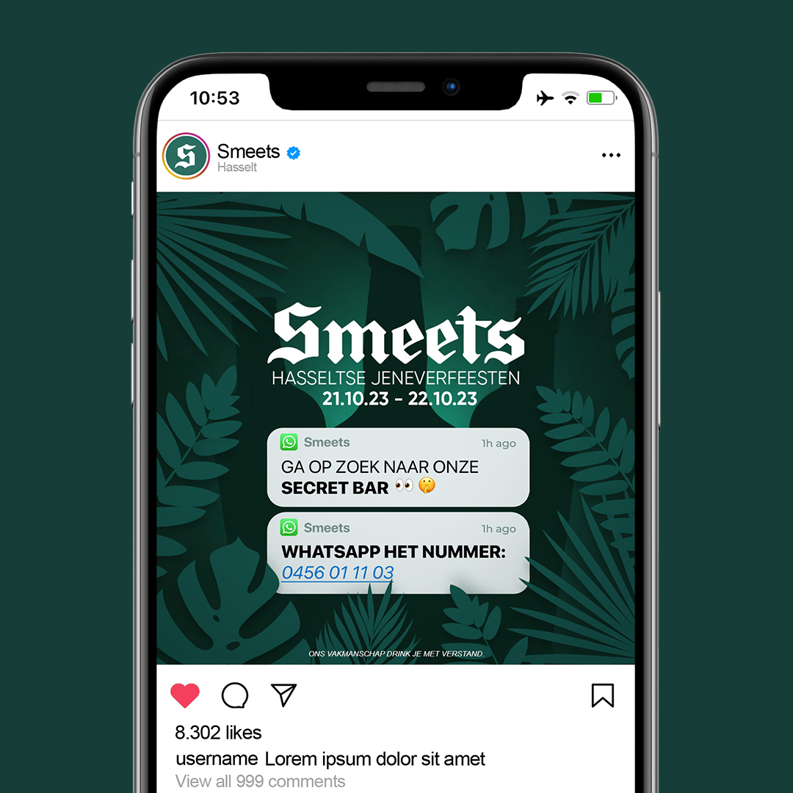
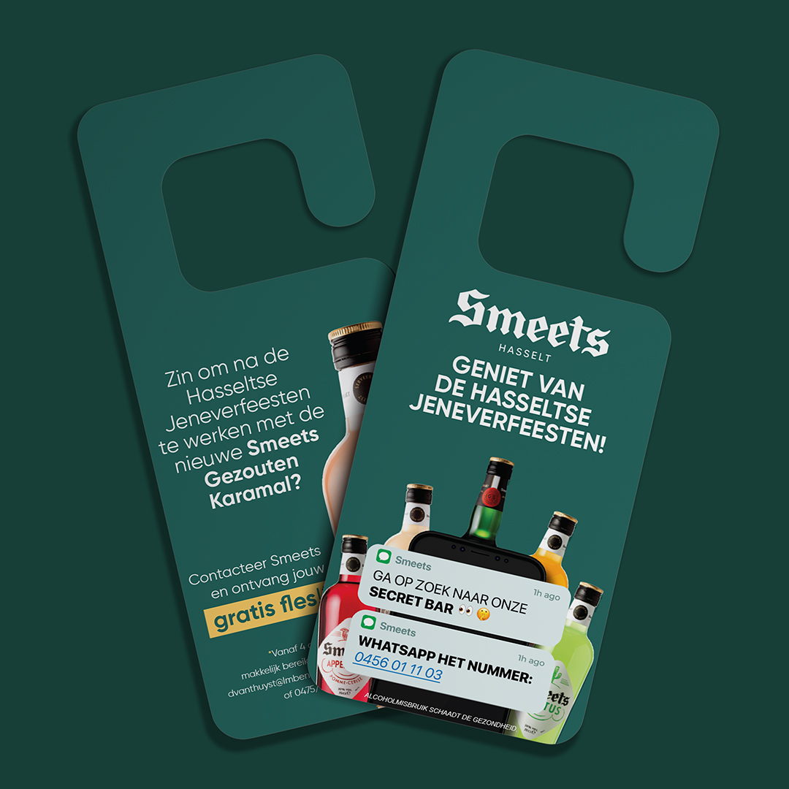
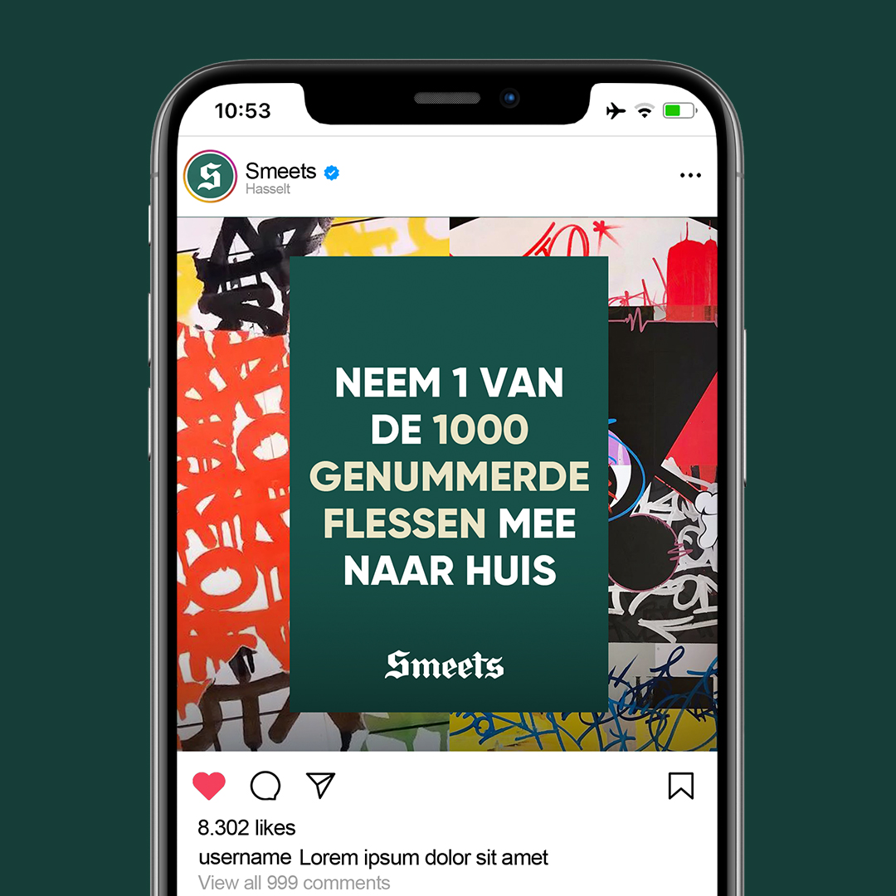
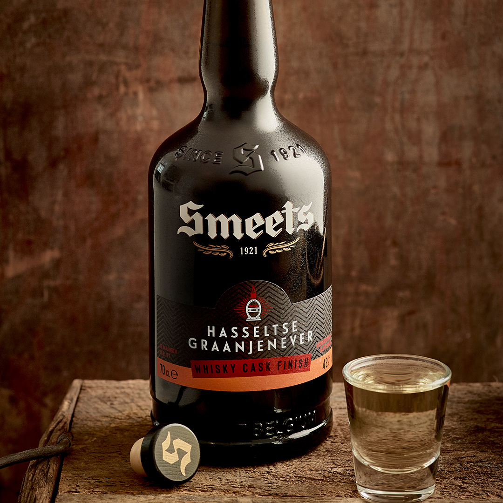
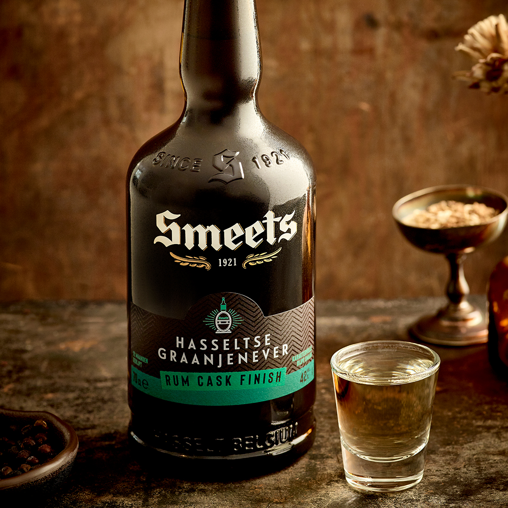
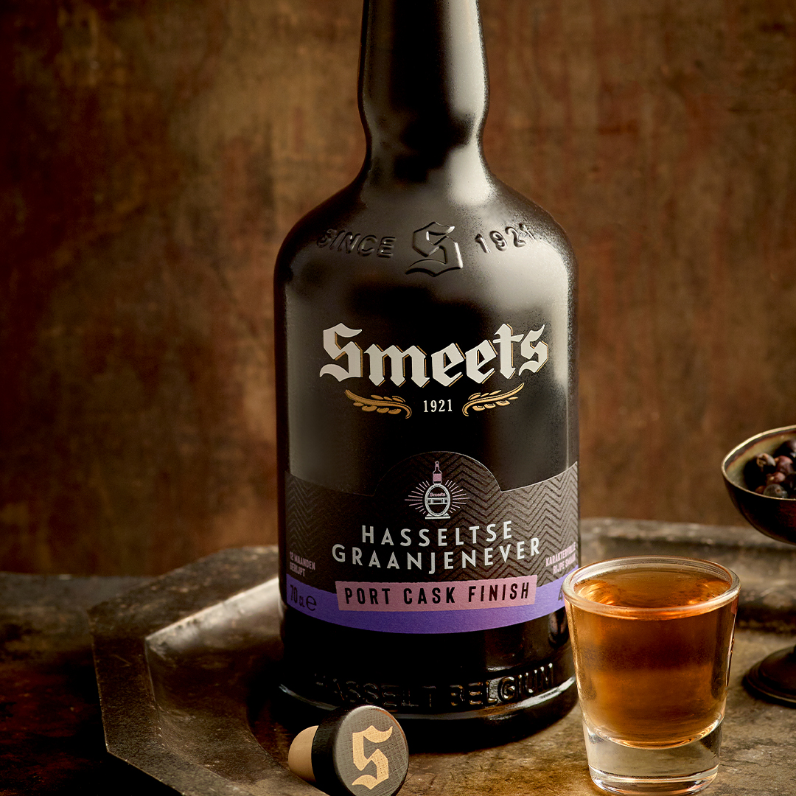

Smeets jenever
Contribution: social media, print, package design
Agency: Sirfish
Assignment: Create a teasing campaign for the secret bar at the Jeneverfeesten.
Approach: My inspiration came directly from the cozy, dimly lit interior of the secret bar, which was richly decorated with plants. I also retained its mysterious nature by incorporating silhouettes. The end result was a set of atmospheric, playful visuals that perfectly matched the existing Smeets identity.


We also designed the packaging for a number of their limited edition products. These resulted in a series of striking labels that support the brand's premium character while maintaining the feel of a limited edition product.
